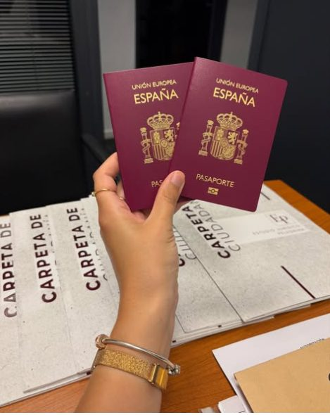
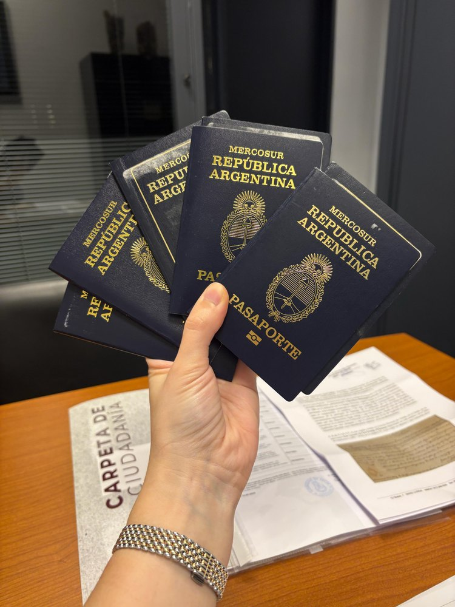

Blog del estudio
Entendé tu trámite antes de dar el primer paso
Guías claras sobre ciudadanías, visas, pasaportes, nacionalidad argentina y sucesiones. Información confiable, en lenguaje simple, para que tomes buenas decisiones.

Pasaporte italiano o español: 10 cosas que deberías revisar antes de viajar
Tener el pasaporte europeo en la mano no alcanza: hay requisitos de vigencia, hojas libres y detalles que, si no revisás a tiempo, pueden frenarte en el aeropuerto.
Leer artículo
Nacionalidad argentina: quién puede obtenerla, requisitos y cómo iniciar el trámite
Por nacimiento, por opción o por naturalización: hay más de un camino hacia la nacionalidad argentina. Te contamos cuál corresponde en cada caso y qué necesitás para empezar.
Leer artículo
¿Visa B1/B2 o ESTA? Todo lo que necesitás saber antes de viajar a Estados Unidos
Son dos formas distintas de entrar a Estados Unidos, y no todos pueden elegir entre ellas. Te explicamos las diferencias, quién necesita cada una y los errores que provocan rechazos.
Leer artículo
¿Tengo derecho a la ciudadanía italiana? Cómo saberlo paso a paso
La ciudadanía italiana se transmite por sangre, pero las reglas cambiaron en 2025. Te explicamos cómo saber, paso a paso, si tu caso encuadra hoy.
Leer artículo
Los 8 errores más comunes que retrasan una ciudadanía italiana
La mayoría de las demoras en una ciudadanía italiana no vienen de Italia: vienen de errores en la documentación que se podían prevenir desde el primer día.
Leer artículoCiudadanía española: qué vías siguen abiertas hoy para argentinos
La ventana de la Ley de Memoria Democrática ya cerró, pero la ciudadanía española sigue siendo posible por otras vías. Te explicamos cuáles siguen vigentes.
Leer artículoCiudadanía española: los errores más frecuentes que pueden hacer fracasar tu trámite
Actas con errores, documentación incompleta, plazos vencidos y turnos perdidos. Los tropiezos más comunes en una ciudadanía española casi siempre son evitables.
Leer artículoFalleció un familiar: cuáles son los primeros pasos que deberías dar
En medio del dolor, aparecen decisiones legales que conviene tomar con orden. Esta guía te ayuda a saber qué reunir, qué evitar y cómo se inicia una sucesión.
Leer artículo¿Se puede vender una casa heredada sin hacer la sucesión?
Es una de las consultas más frecuentes. La respuesta corta es no, pero hay matices, riesgos y algunas alternativas que conviene conocer antes de comprometerte.
Leer artículoHerencia sin testamento: quién hereda y en qué orden
Cuando una persona fallece sin dejar testamento, la ley define quién hereda y en qué orden. Te explicamos cómo funciona la sucesión intestada en Argentina.
Leer artículoNo hay notas en esta categoría por ahora.